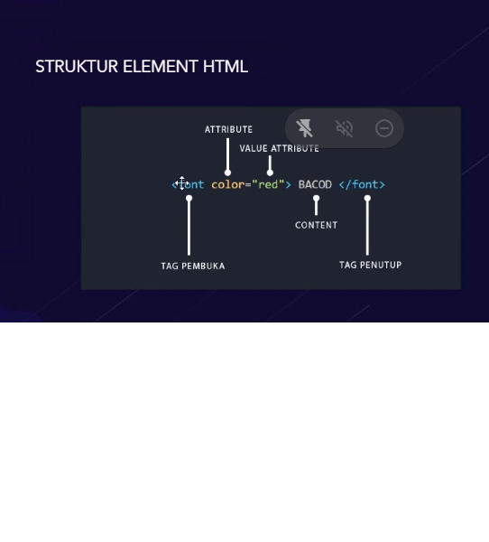

Belajar HTML Pertemuan 2
dalam HTML, file yang akan dibaca secara otomatis duluan adalah index.html, klo misalnya nama yang lain maka harus di setting terdahulu
Test Bold
Test Strong
Test Italic
Test Emphasize
Test Marking (efek Stabilo)
Test Small (decrease font size)
Test Garis tengah
Test Garis Bawah
Text with Sub Normal Text
Text with supNormal Text
atribute gambar 'alt' digunakan untuk sebagai alternatif ketika file gambar ada bermasalah